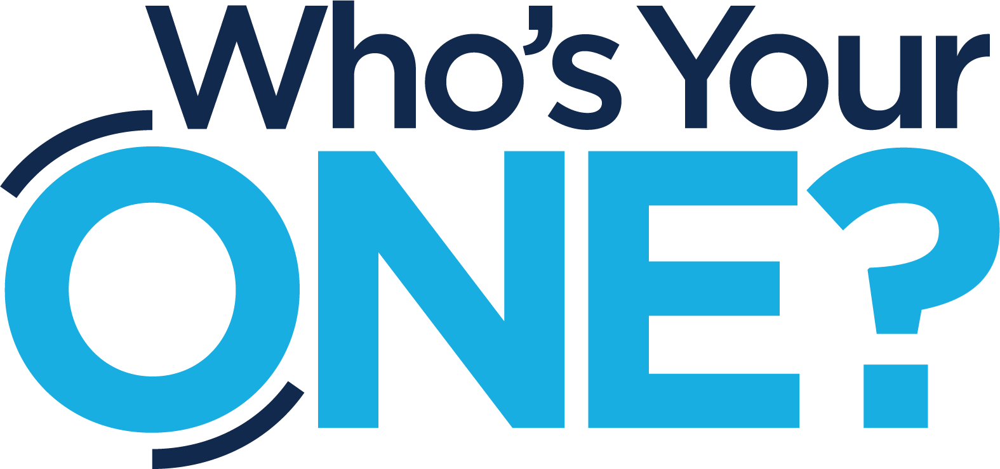

nvf.life / brand
Everything an agent or a designer needs to produce work that looks and sounds like New Vision Fellowship — colors, typography, logos, frameworks, and voice. Structured for machines, readable by people.
Agent Instructions
brand-kit.jsonIt contains all structured brand data in a single machine-readable file. For tone, logo usage, and writing rules, read brand-guidelines.md. All asset paths in the JSON are relative to the repository root — resolve them against base_url.
When producing branded output, use Brand Leaf Green (#5f9a32) as the primary color on light backgrounds and Green Bright (#74ca33) on dark ones. Set headings in Archivo and body copy in Source Serif 4, and follow the voice object. Logos are SVGs in logos/ — prefer the stacked lockup in most contexts.
Repository
Machine-readable brand data. Colors, typography, logo paths, sub-brands, frameworks, voice, and print specs. Start here.
Human- and agent-readable guidelines covering voice, color rules, logo usage, design patterns, minimum sizes, and print specifications.
The stacked lockup, horizontal wordmark, and leaf mark — each in color, white, and black variants. SVG preferred.
Our six population-focused ministries — the Wheel, the Kiln, the Mill, Titus 2 Women, Men of Vision, and Vintage Visions.
Life Groups and Who’s Your One, including a white variant for use on dark backgrounds.
brand-kit.json
| Key | Description |
|---|---|
brand | Name, mission, vision, website, founding year, and denominational affiliations. |
locations | Campus address, email, and phone. |
core_values | The five core values, in canonical order. |
frameworks.on_ramps | The four On-Ramps — Gather, Give, Group, Go — each with its color, summary, and URL. Includes the canonical presentation order. |
frameworks.clay_stages | Clay in the Potter’s Hands — the five growth stages, each with its color, transition, and what it multiplies. |
color_system.palette | Primary, secondary, and neutral colors with RGB, text_on, usage notes, and tonal variations. |
color_system.accents | The four On-Ramp category colors. Never extend beyond these. |
typography | Archivo, Source Serif 4, and Kaushan Script with weights, usage rules, a full size scale, and minimum sizes for print and projection. |
logos.lockups | Stacked, horizontal, and leaf mark — each with an assets[] array of variants and the background each is approved for. |
logos.rules | Clearspace, variant selection, and prohibitions. |
sub_brands | Six ministries, each with audience, website, and logo assets. |
initiatives | Life Groups and Who’s Your One with descriptions and assets. |
voice | Summary, a short writing statement, tone descriptors, ten dos, ten don’ts, and example phrases. |
brand_elements | Specs for the kicker lockup, cards, contrast columns, image veil, road motif, and timeline. |
print | Bleed, resolution, color mode, and trim sizes. |
rules | Top-level directives for agents consuming this kit. |
Colors
Dark, dramatic moments plus light, readable content. Everything is warm — never pure black, never pure white, never a cold gray.
Greens
Warm Neutrals
The Four On-Ramps
Typography
text-wrap: pretty. Georgia is the fallback.Assets
The stacked lockup is our primary logo. Match the variant to the background — the charcoal wordmark will not read on dark, and the white wordmark will not read on paper. Prefer SVG everywhere.


Assets



Voice
Write like a trusted friend who is a little further down the road: warm, direct, unhurried. We invite people in — we never recruit, pressure, or hype.